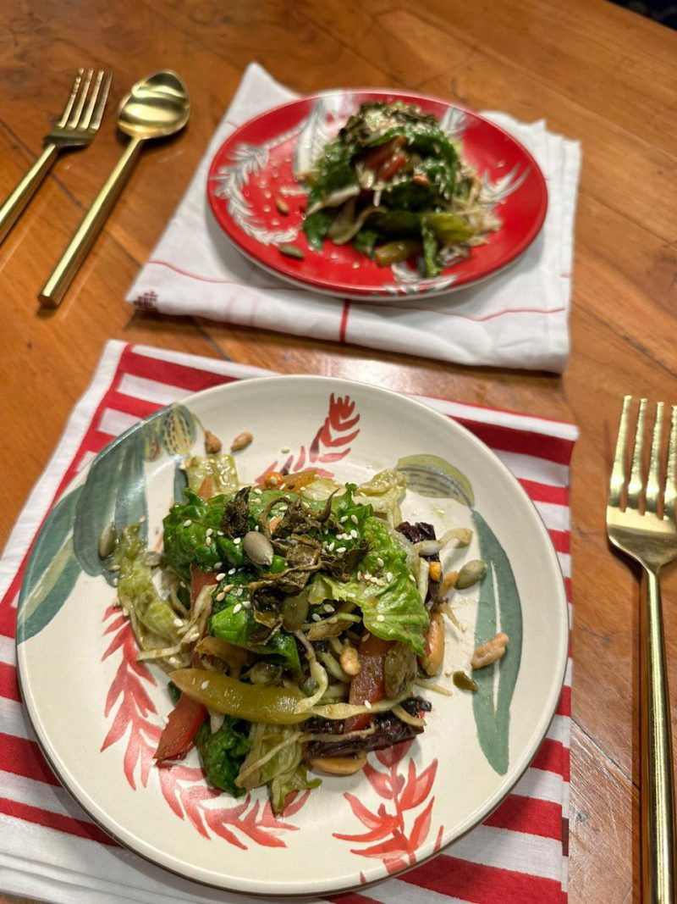

Tealeaf Salad

Description
Tealeaf salad is one of the most famous Burmese traditional salads and it
is even to safe to say that iconic food of myanmar people.
Ingredients are as follow:
Ingredients
- Tealeaf (which is obvious)
- Two table spoons of sunflower oil
- One table spoon of fish sauce
- 100g of deep fried cripsy pea
- Some minced cabbage
- A tomatoe
- One table spoon of salt
Steps
- place tealeaves and cripsy fried pea into the bowl
- Place minced cabbages
- Add One table spoon of fish sauce
- Add tomatoe
- Add salt
- Mixed them well